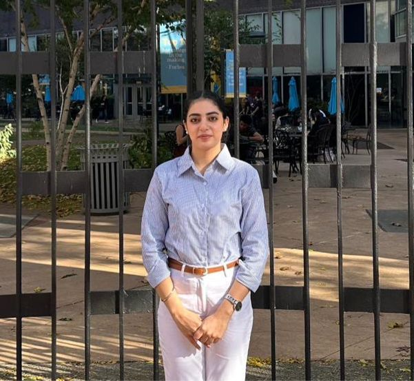

GURLEEN SABHARWAL
DATA SCIENCE & ANALYTICS PROFESSIONAL
I am a data-driven graduate student passionate about transforming raw data into meaningful insights. With hands-on experience in SQL and Power BI at Strategic Research Insights, I thrive at uncovering trends that drive smart business decisions and strategic growth. Actively seeking internship roles where I can make impact.